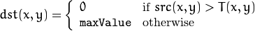

Centering functions¶
find_loop¶
Launch detection with the pretreatment algorithm and a numpy array as input image
The pretreat algorithm does a first work on the original image to light up the background and improve the recognition process. Blabla.
- lucid.find_loop(imgInfo, showVisuals=False, zoom=0, testingProc=False, faceFindProc=False)¶
Parameters: - imgInfo (String or Numpy array) – Information about the input image. Two types allowed yet : Image path or Numpy array
- showVisuals (Boolean) – Display for debug
- zoom (uint) – Zoom level
- faceFindProc (Boolean) – For face finding procedure
- testingProc (Boolean) – For testing procedure.
Returns: Return from loop detection (label,x,y). If it is a testing procedure, the return format is different (imageWidth, imageHeight, [loop detection function common return])
loop_detection¶
Detection of loops in image
The first treatment consist in a threshold amd a binarisation with local mean. The size of the windows is 45x45 pixels and the tolerence which is taken is six gray level difference. In fact, a window of 45x45 around the treated pixel is got. The mean of the gray levels of the area is calculated and it’s give us the local average of gray level. If the pixel gray level is lower (because we want to have the loop in white) at nearly 6 gray level than the local average of gray level in his area, then it become white, else black.
It can be illustrate by the formula :

In pratice, with a image we obtain something like :
Input image
Output image
On exemple in the output image, the loop and some noise can be seen. First, delete the noise is needed. For this task, a median filter is used. It will be passed several time because more noise can appear in the image.
- lucid.loop_detection(imgInfo, showVisuals=False, zoom=0)¶
Parameters: - imgInfo (String or Numpy array) – Information about the input image. Two types allowed yet : Image path or Numpy array
- showVisuals (Boolean) – Display for debug
- zoom (uint) – Zoom level
Returns: (label,x,y) result from loop_detection function